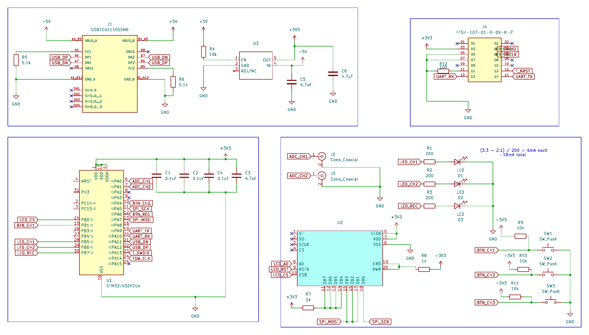

A two-channel, 0–3.3V, 500kHz-bandwidth signal acquisition device being designed from requirements through schematic capture around an STM32L432. Currently mid-schematic. PCB layout, a breadboard prototype, and firmware are still ahead.

Not an instrument anyone would actually rely on. Deliberately scoped as an introductory project, but a real one nonetheless: a two-channel oscilloscope that has to sample, display, and stream real signals under real timing constraints. The goal is to go through a full hardware design process, from an abstract idea down to a working PCB and firmware, rather than just wiring up a dev board.
I started by breaking the abstract idea of "an oscilloscope" into concrete hardware and firmware requirements: two BNC input channels reading 0–3.3V, a graphic display capable of showing a live channel, a 500kHz sample rate (chosen so the ADC could hit roughly 10 samples per signal period, well past the Nyquist minimum), USB data streaming and logging to a PC, physical buttons for channel and recording control, and a small form factor.
Around those requirements, I selected an STM32L432 microcontroller for its built-in 12-bit ADC (5 mega-samples/sec, comfortably above the 500kHz target), small package size, and USB support, and a 2.8" SPI graphic LCD (192x96, ST75256 controller) for the display, chosen partly because SPI keeps the pin count manageable on a small, GPIO-constrained microcontroller. From there I started schematic capture in KiCad, importing symbols for both parts and wiring up the single 3.3V power rail the design needs.
A meaningful chunk of the work so far has been getting the details right rather than just wiring parts together. I used ST's AN4555 application note to correctly decouple the MCU: 100nF ceramic and 10µF tantalum/ceramic capacitors in parallel on every VDD/VSS pair, placed as close to the pins as the note recommends. For the LCD, I checked whether it needed the same treatment: tracing the module's VDD pin showed it already has an onboard decoupling capacitor, and the vendor's own interfacing guide confirms none is needed externally, so I left it off rather than adding a redundant part.
I also used STM32CubeMX to work through the hardware pin definitions before finishing the schematic: SPI1 configured as transmit-only master (software chip select, since the LCD doesn't need the hardware NSS line), ADC1 enabled for single-ended input, USB configured for CDC (virtual COM port) so the device will show up as a serial port for streaming, and GPIO grouped by where it physically needs to sit on the board, buttons as interrupt pins, LEDs as outputs, plus the SWD and UART pins needed for programming and debug.